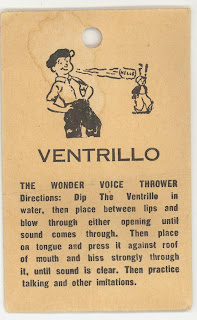

Punch's Swazzle
9/2/2010
{kind=link}

Similar, yet different from the Bird Whistle is the small device traditionally referred to as Punch's Swazzle. Used by Punchmen, it was placed in the mouth to generate the unique sound of Punch's voice for Punch and Judy shows. Often with string attached, I'm told, so the small metal device could be "retrived" if inadvertently swallowed....not a pretty thought.
The device is made of two metal strips bound together around a cotton tape reed. Because it is small and positioned in the back of the mouth, repeatedly moved during a performance it is traditionally said no Punch and Judy performer can consider himself a Professor until he has swallowed his swazzle at least twice. Just one more reason I'm thankful I took up ventriloquism which requires no device in the mouth!
I do have a Punch Swazzle. It was given to me by my brother-in-law and came in the small envelop pictured here. But I have never been tempted to try to use it! I agree with the comments from W.S. (below).
* * * * * *
From W.S.: "Punch workers use this type of thing to make that high pitched shriek Punch makes, but other than that, they are TOTALLY useless to a vent! I HAD one of the "throw your voice" "gimmicks" and it truly was not worth the effort of obtaining. So I say, unless you want to do a punch act, or have some reason to make an annoying high pitched squeal in your act (forget it). "